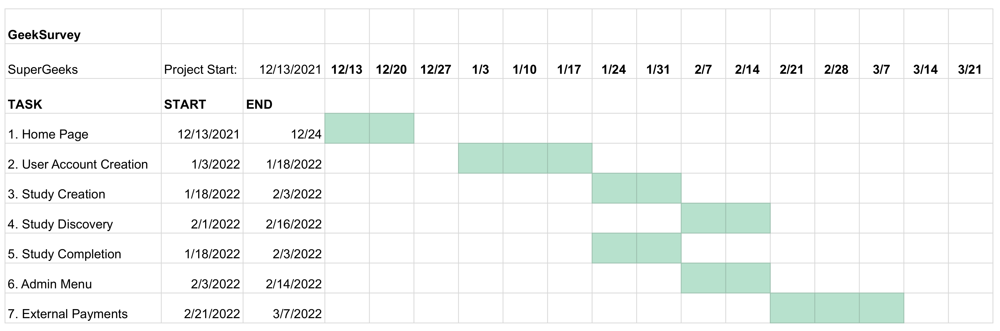

Process
Our process for making GeekSurvey into a reality.
Project Description
As it currently stands, researchers have a difficult time connecting with willing and qualified participants for software engineering research opportunities. Software engineering researchers have tried both social media apps and emails to recruit potential research participants, but to little success. Currently, a response rate of 5-10% is deemed acceptable. The team here at SuperGeeks believes that we can do better. We aim to develop a secure, web-based platform that will effectively and efficiently manage software engineering research recruiting efforts. Our platform aims to produce valid, reliable, and relevant data for our clients and other software engineering researchers. The initial concept for this project was provided by our sponsor, in the form of a Capstone project proposal.
Schedule, Resources, and Budget
Our schedule showing the project plan can be seen below. SuperGeeks must complete initial development on GeekSurvey by May of 2022. Development strategy details can be found in documents such as Technical Feasibility and Requirements Specification. As of November 2021, we anticipate that this project will not have to use any monetary resources, as hosting can be accomplished through NAUITS. Current progress is a bare bones foundation and git repository for GeekSurvey which can be found at the official SuperGeeks GitHub organization.
Documents:
Team Inventory - Information about the team members.
Team Standards - Standards of conduct for the team.
Mini Intro - Slides from a short presentation about the project overall.
Tech Feasibility - Research about the feasibility of some chosen solutions.
Requirements Specification - Official requirements for the MVP we will deliver Spring of 2022.
Design Review #1 - Slides from the Design Review #1 presentation, which outlines initial progress, requirements, and project plan.
Mini Video - A short elevator-pitch presentation for GeekSurvey